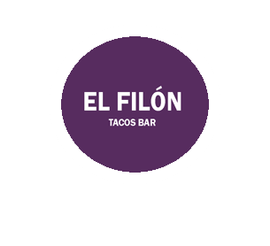

<!--
  Generated template for the MenuPage page.

  See http://ionicframework.com/docs/components/#navigation for more info on
  Ionic pages and navigation.
-->
<ion-header>
  <ion-navbar>
    <ion-title>MENU</ion-title>
  </ion-navbar>
</ion-header>

<ion-content>
  <ion-card class="fondotransparente">
    
    <u ion-item text-wrap *ngFor="let item of _sp.productos" color="secondary">
      <ion-icon name="ios-add" item-start></ion-icon>
      {{item.nombre}}, {{item.precio}}.00
    </u>
  <ion-list class="card">
    <button color="primary" ion-item *ngFor="let item of _sp.secciones" (click)="showProductos(item.nseccion)">
      <ion-icon *ngIf="item.nombre === 'BEBIDAS'" name="ios-beer" item-start></ion-icon>
      <ion-icon *ngIf="item.nombre === 'POSTRES'" name="ios-ice-cream" item-start></ion-icon>
      <ion-icon *ngIf="item.nombre !== 'POSTRES' && item.nombre !== 'BEBIDAS' " name="ios-restaurant" item-start></ion-icon>
      {{item.nombre}}
    </button>

  </ion-list>
</ion-card>
</ion-content>
